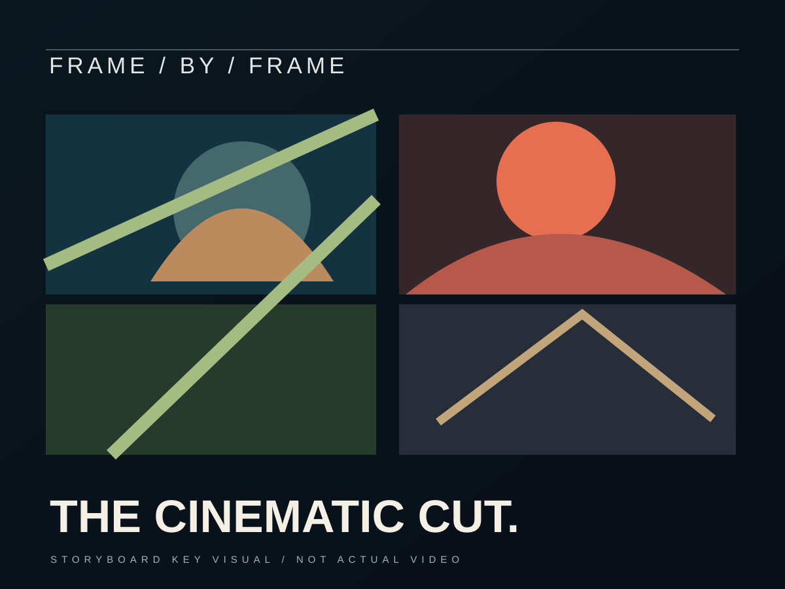

FRAME — تصور مونتاج سينمائيFRAME — Cinematic Editing Direction

VISUAL EXPERIMENT / MO DESIGNفكرة بصرية تسيب أثر.A visual idea worth remembering.
مجموعة لقطات تصورية لدراسة الإيقاع والإخراج البصري.Concept storyboard exploring editing rhythm, not a released film.
النهج الإبداعيCreative approach
الهدف من الدراسة هنا هو استكشاف اتجاه فني وشخصية بصرية قابلة للتطوير إلى حملة كاملة. الأصول المعروضة تصورات تجريبية للعرض، وليست صورًا من مشروع تم تنفيذه لعميل.This is an independent art-direction exploration imagining how a single creative idea could grow into a consistent campaign. The visuals are design concepts, not commissioned client deliverables.
من التصميم للهويةFrom design to identity
تتجسد قوة العمل في اختيار الإضاءة واللون والتكوين والتباين، مع الحفاظ على مركز بصري واضح يمكن أن يمتد إلى بوستات أو فيديو عند إنتاج المشروع الفعلي.The visual system explores lighting, colour, composition and hierarchy. The concept could be adapted into further posts or video only if those additional assets are actually produced.
جاهز نخلي فكرتك مشروع حقيقي؟Ready to turn your idea into something real?
ابعت المطلوب، وهنبني طريقة التنفيذ المناسبة لمشروعك.Tell me about your brief and we will explore the right production approach.
اتواصل واتساب ↗Discuss a project ↗